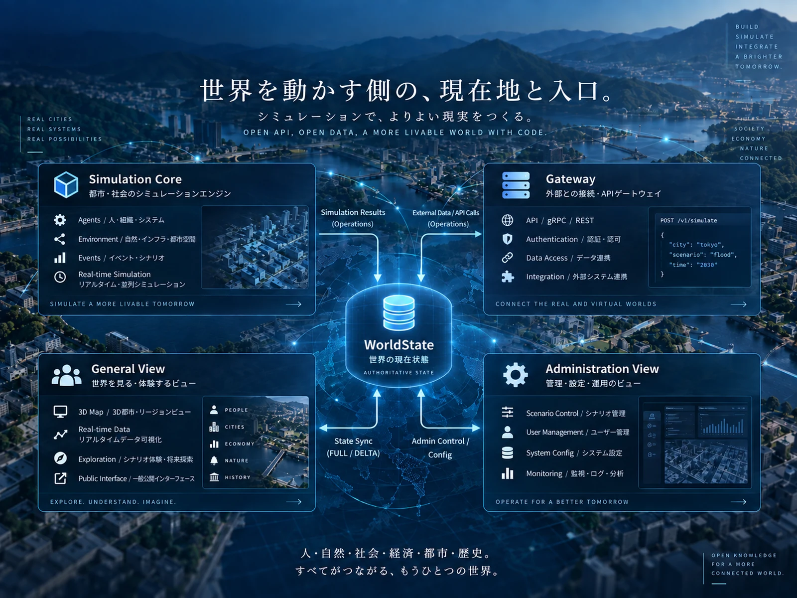

01 / ARCHITECTURE
4つに分ける。
でも、世界はひとつにつなぐ。
MachiVerseは4つの最上位コンポーネントを、独立した実行・ビルド・配布単位として扱います。 コンポーネント間では内部型や実装DLLを通信契約として共有せず、versioned Protocol / schemaを境界にします。
Simulation CoreWorldState / Operation / Persistence
GatewayAuth / Cache / Publication
General ViewBrowser / Participation / Prediction
Administration ViewHealth / Config / Operations

Alpha 1.0では、この4つが実際につながっています。
CORE実起動・mutation・recoveryまで確認済み。
GATEWAYCore / View / Adminの実接続が成立。
GENERAL VIEWbrowser E2Eとprediction / reconciliationの基礎を接続。
ADMIN VIEWhealthとConfig read / changeのE2Eが成立。
02 / QUICK START
読むより先に、
まず動かしてみる。
現在READMEで案内しているQuick StartはWindows向けです。.NET SDK 10.0.400相当と最新のdevelopを前提にします。
git checkout develop
git pull
start-alpha.batstart-alpha.bat --no-build03 / ENGINEERING PRINCIPLES
コードを書く前に、
壊してはいけない約束がある。
世界シミュレーションを長く育てるため、実装の便利さよりも再現性と境界の明確さを優先します。
04 / CURRENT LIMITATIONS
Alpha 1.0は、
完成版ではない。
「実接続済み」と「production-ready」は別です。
現在のlocal Alpha profileはloopback-onlyの開発・integration用であり、production security profileの代替ではありません。
05 / CONTRIBUTING
世界の実装へ、
参加する。
通常の作業は対象コンポーネントの常設ブランチから作業ブランチを切り、Pull Requestで統合します。 Protocol変更では実装より先に対象設計書を更新し、設計変更も関連ドキュメントへ反映します。